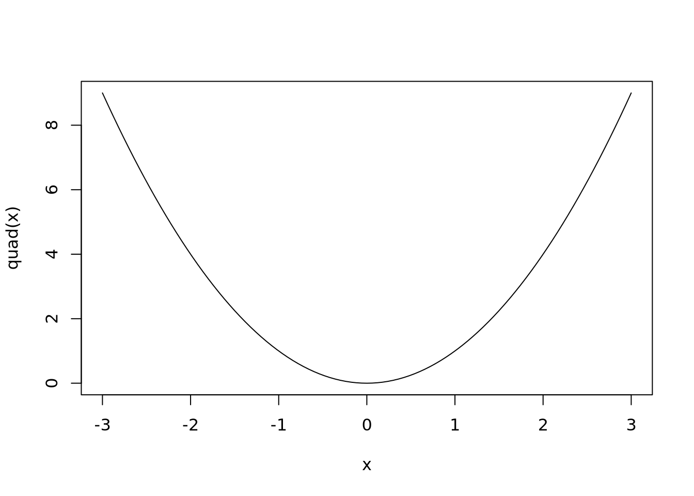

Last modified on January 08, 2024 06:06:25 Eastern Standard Time
In the article Fitting Percentage of Body Fat to Simple Body Measurements, Johnson (1996) uses the data at http://jse.amstat.org/datasets/fat.dat.txt provided to him by Dr. A. Garth Fischer in a personal communication on October 5, 1994, as a multiple linear regression activity with his students. A subset of the variables at http://jse.amstat.org/datasets/fat.dat.txt is available in the R package mfp by Ambler and Benner (2022) and the data set is used frequently in the text Statistical Regression and Classification by Matloff (2017).
The purpose of this activity is to have the reader critically question, evaluate, and clean the original data provided at http://jse.amstat.org/datasets/fat.dat.txt. The guided activities will reinforce reading data into R using the fread() function from the data.table package written by Dowle and Srinivasan (2023), creating graphs with both packages ggplot2 and plotly written by Wickham, Chang, et al. (2023) and Sievert et al. (2023), respectively, and creating new variables with functions such as mutate() from the dplyr package written by Wickham, François, et al. (2023).
Directions
Type complete sentences to answer all questions inside the .callout tags provided in the Quarto document. Round all numeric answers you report inside the answer tags to four decimal places. Use inline R code to report numeric answers inside the .callout tags (i.e. do not hard code your numeric answers).
The article by Johnson (1996) defines body-fat determined with the brozek and siri methods as well as fat free weight using (Equation 1), (Equation 2), and (Equation 3), respectively.
To read tabular data from the internet, one might use the read.table() function or the fread() function from the data.table package. The general structure to read data from the internet is to provide the URL in the file or input arguments of the read.table() or fread() functions, respectively.
R Code
# Example structureDF1 <-read.table(file ="http://some.url.com")# load data.table packagelibrary(data.table)DF2 <-fread(input ="http://some.url.com")
Problem 1
Read the original data from http://jse.amstat.org/datasets/fat.dat.txt into your current R session. Specifically, start by using the fread() function from the data.table package to read the data from http://jse.amstat.org/datasets/fat.dat.txt into an object named bodyfat. The data dictionary for http://jse.amstat.org/datasets/fat.dat.txt is available at http://jse.amstat.org/datasets/fat.txt.
Pass the following vector of names to the col.names argument of fread(): c("case", "brozek", "siri", "density", "age", "weight_lbs", "height_in", "bmi", "fat_free_weight","neck_cm", "chest_cm", "abdomen_cm", "hip_cm", "thigh_cm", "knee_cm", "ankle_cm", "biceps_cm","forearm_cm", "wrist_cm").
Problem 1 Answers
# Type your code and comments inside the code chunk# Obtaining the original data# Or better to download to local folder
Problem 2
Use the read.table() function to read the data from http://jse.amstat.org/datasets/fat.dat.txt into an object named bodyfat2. Pass the same vector created in Problem 1 to the col.names argument of read.table().
Problem 2 Answers
# Type your code and comments inside the code chunk# Obtaining the original data# Or reading from local folder
The function curve() draws a curve corresponding to a function of the interval [from, to]. For example, to draw the function \(y = x^2\) from -3 to 3 use the following code to obtain Figure 1.
R Code
quad <-function(x){x^2}curve(quad, from =-3, to =3)

Figure 1: Using the function curve() to draw a quadratic function
To superimpose a function on an open graphics device with curve(), use the argument add = TRUE. For example, to graph \(y = x^2\) with a blue line and \(y = 4 + \sin(8x)\) with a red line from \(-\pi\) to \(\pi\), use the following code:
R Code
quad <-function(x){x^2}curve(quad, from =-pi, to = pi, col ="blue", ylab ="f(x)")nsin <-function(x){4+sin(8*x)}curve(nsin, add =TRUE, col ="red")
Problem 3
Graph the relationship between brozek and density given in Equation 1 with a blue line as well as the relationship between siri and density given in Equation 2 with a red line. First, define functions fb and fs for Equation 1 and Equation 2, respectively. Use the function curve() to draw Equation 1 and Equation 2 on the same graphics device for density values between 1.0 \(\text{gm/cm}^3\) and 1.10 \(\text{gm/cm}^3\).
Problem 3 Answers
# Type your code and comments inside the code chunk# Functions fb and fs
Code to construct the requested graph using ggplot2 code is given below and the result is visible in Figure 2.
R Code
fb <-function(density){(457/density) -414.2}fs <-function(density){(495/density) -450}library(ggplot2)p <-ggplot(data =data.frame(x =c(1, 1.1), y =c(0, 50)), aes(x = x, y = y)) p +stat_function(fun = fb, color ="blue") +stat_function(fun = fs, color ="red") +labs(x =expression(paste("density in ", gm/cm^3)), y ="bodyfat") +theme_bw()
Figure 2: Realtionship between bodyfat and density according to Brozek and Siri definitions
Problem 4
How would you characterize the theoretical relationship given in Equation 1 and Equation 2?
Problem 4 Answers
Delete this text and type your text answer here.
Since the relationship between body fat and density for both Equation 1 and Equation 2 is linear, one way to check for unusual observations is to plot the actual values for brozek versus density or siri versus density using the data stored in bodyfat or bodyfat2. Points that do not fall along a straight line should be scrutinized for possible data entry errors or other possible explanations.
The plotly package allows the user to create interactive graphs or to convert ggplot2 graphs to plotly graphs using the ggplotly() function. Given a data frame say DF with variables X and Y, the following template code will create an interactive plotly scatterplot.
R template Code
library(plotly)library(ggplot2)# Create ggplot scatterplot named pp <-ggplot(data = DF, aes(x = X, y = Y)) +geom_point()# Convert ggplot scatterplot to plotly with ggplotly()p2 <-ggplotly(p)# Display graphp2
Consider an interactive scatterplot showing the distance required to stop for vehicles traveling at different speeds using the cars data frame.
R Code
library(plotly)library(ggplot2)# Create ggplot scatterplot named pp <-ggplot(data = cars, aes(x = speed, y = dist)) +geom_point()# Convert ggplot scatterplot to plotly with ggplotly()p2 <-ggplotly(p)# Display graphp2
Problem 5
Create interactive plotly scatterplots of siri versus density with case mapped to color, weight_lbs versus height_in with case mapped to color, and ankle_cm versus weight_lbs with case mapped to color to help identify potential outliers. Identify the case numbers for the outliers from your three plots.
Problem 5 Answers
# Type your code and comments inside the code chunk# Creating interactive scatterplot of siri versus densitylibrary(plotly)library(ggplot2)p <-ggplot(data = bodyfat, aes(x = density, y = siri, color = case)) +geom_point()p
Figure 3: Plot of siri versus density
# Type your code and comments inside the code chunk# Creating interactive scatterplot of weight_lbs versus height_inp3 <-ggplot(data = bodyfat, aes(x = height_in, y = weight_lbs, color = case)) +geom_point()p3
Figure 4: Plot of weight_lbs versus height_in
# Type your code and comments inside the code chunk# Creating interactive scatterplot of ankle_cm versus weight_lbsp5 <-ggplot(data = bodyfat, aes(x = weight_lbs, y = ankle_cm, color = case)) +geom_point()p5
Figure 5: Interactive scatterplot of ankle_cm versus weight_lbs
Delete this text and type your text answer here.
Problem 6
Create a subset of the bodyfat data frame named BF consisting only of the cases identified as outliers in Problem 5. Use Equation 2 to create a new variable in BF named density_C (computed density) based on the reported siri values. Use Equation 4 to reverse engineer the computed height in inches based on the values in weight_lbs and bmi using the conversion factors given at the start of the lab. Store the computed heights in inches in a variable named height_in_C. Use the verb mutate from the dplyr package to create both density_C and height_in_C. Show the values of the selected outliers for columns case, density_C, height_in, height_in_C, and ankle_cm. What do you notice about the density and density_C values in BF for the scatterplot you created in Figure 3? What do you notice about the height_in values in BF for the scatterplot you created in Figure 4? What do you notice about the ankle_cm values in BF for the scatterplot you created in Figure 5?
Problem 6 Answers
# Type your code and comments inside the code chunk# Isolating points of interest# Computing density and height
Type your complete sentence answer here using inline R code and delete this comment.
Problem 7
Change the reported density values of bodyfat based on your answers from Problem 6. Change the height_in value for case 42 to the value you reverse engineered in Problem 6 rounding to the nearest half inch.
Problem 7 Answers
# Type your code and comments inside the code chunk# Updating computed bodyfat values and bmi measurements# Replacing identified typos of density# Replacing identified typos in height_in# Replacing identified typos in ankle_cm
Problem 8
Create variables named siri_C, brozek_C, and bmi_C, that compute body-fat values rounded to one decimal place according to Equation 2, Equation 1, and Equation 4, respectively. Replace the values in siri and brozek with the computed values in siri_C and brozek_C for case 182.
Problem 8 Answers
# Type your code and comments inside the code chunk
Problem 9
Consider differences between brozek and brozek_C as well as differences between siri and siri_C greater than 0.11 to be some type of data entry problem. Use the verbs filter() and select() to show the values for case, siri, siri_C, brozek, brozek_C, and density that are considered data entry problems. If both the computed value for siri and brozek differ from the reported values of siri and brozek, it is likely a data entry problem with the density value. If one of either siri or brozek agrees with its computed value, the one that does not agree with the computed value is likely a data entry problem. Which cases seem to have data entry problems and for what reasons?
Problem 9 Answers
# Type your code and comments inside the code chunk# Identifying bodyfat typos for brozek and siri
Type your complete sentence answer here and delete this comment.
Problem 10
Fix any data entry errors you identified in Problem 9 in the bodyfat data frame. Make sure to update the siri_C, brozek_C, and bmi_C variables in bodyfat using your corrected values from Problem 9. Write code to verify that there are no differences between brozek and brozek_C or any differences between siri and siri_C greater than 0.11.
Problem 10 Answers
# Type your code and comments inside the code chunk# Replacing bodyfat typos for brozek and siri# Updating siri_C, brozek_C, and bmi_C# Checking for typos according to given criteria
Problem 11
Create interactive plotly scatterplots of siri_C versus density with case mapped to color and brozek_C versus density with case mapped to color using the modified bodyfat data frame. Superimpose Equation 2 and Equation 1 over their corresponding scatterplots. Comment on the scatterplots.
Problem 11 Answers
# Type your code here for siri_C vs density
# Type your code here for brozek_C vs density
Type your complete sentence answer here using inline R code and delete this comment.
Problem 12
How many of the values do you think are potentially rounding errors? Explain your reasoning and show the code you used to identify the errors.
Problem 12 Answers
# Type your code and comments inside the code chunk# Number of rounding discrepancies for siri# Number of rounding discrepancies for brozek# Number of rounding discrepancies for bmi
Type your complete sentence answer here using inline R code and delete this comment.
Problem 13
What additional variables might you explore to check the quality of the reported data?
Problem 13 Answers
Type your complete sentence answer here using inline R code and delete this comment.
# Type your R code inside the code chunk
Problem 14
Create an object named bodyfatClean that excludes the variables brozek, siri, and bmi from the bodyfat data frame. Use the function write.csv() or write_csv() to store the bodyfatClean object as a CSV file.
Matloff, Norman. 2017. Statistical Regression and Classification: FromLinearModels to MachineLearning. 1 edition. Boca Raton: Chapman; Hall/CRC.
Sievert, Carson, Chris Parmer, Toby Hocking, Scott Chamberlain, Karthik Ram, Marianne Corvellec, and Pedro Despouy. 2023. Plotly: Create Interactive Web Graphics via Plotly.js. https://CRAN.R-project.org/package=plotly.
Wickham, Hadley, Winston Chang, Lionel Henry, Thomas Lin Pedersen, Kohske Takahashi, Claus Wilke, Kara Woo, Hiroaki Yutani, and Dewey Dunnington. 2023. Ggplot2: Create Elegant Data Visualisations Using the Grammar of Graphics. https://CRAN.R-project.org/package=ggplot2.
Wickham, Hadley, Romain François, Lionel Henry, Kirill Müller, and Davis Vaughan. 2023. Dplyr: A Grammar of Data Manipulation. https://CRAN.R-project.org/package=dplyr.